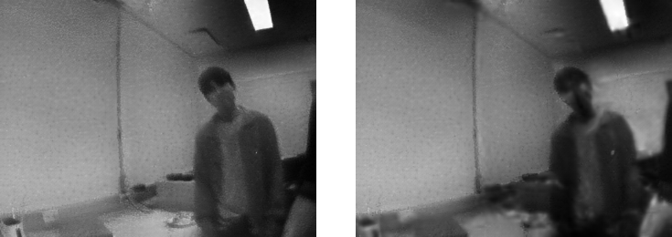

User Study
A Quick Note About the Questionnaire
Modern AR/VR applications frequently request the client to take photos & videos of their surroundings for immersive experiences rendered on top of the everyday world. This means that once AR/VR services become ubiquitous, people can be unknowingly captured and their visual data can be stored on servers of AR/VR service providers.
In this questionnaire we aim to examine how people feel about being captured with cameras of complete strangers, and having the visual information stored on data centers of AR/VR services.
Part 1: Preliminary Assessment
On a scale of 1 to 5, please rate the feeling of insecurity for being captured with a camera in the following scenarios. 1 means that you are completely okay with the visual information being captured, 5 means that you are seriously concerned.
- You are captured on CCTV. A small group of people (security guards, administrators, etc.) may regularly view the recorded content.
- You are captured on a stranger’s camera in a tourist spot which will be privately owned by that individual.
- You are captured on a friend’s camera in a tourist spot which will be privately owned by him/her.
- You are captured on a friend’s camera in a tourist spot which will be shared with other friends via SNS apps such as Instagram.
- You are captured on a YouTuber’s camera which will be publicly posted.
Part 2: Event Cameras Introduction
Event cameras are neuromorphic sensors that encode visual information as a sequence of events. In contrast to conventional frame-based cameras that output absolute brightness intensities, event cameras respond to brightness changes. The following figure shows a visual description of how event cameras function compared to conventional cameras. Notice how brightness changes are encoded as 'streams' in the spatio-temporal domain.
Part 3: Event Camera Security Assessment - 1
Here is a side-by-side visualization of frame-based cameras and event cameras. Note that event streams generated between each image frame are accumulated to create the image-like formation on the right.
Here is another example of frame-based and event camera outputs.
On a scale of 1 to 5, please rate how insecure you would feel being captured with an event camera. Assume you are captured by a complete stranger. The information will be stored on both the stranger's device and the data centers of AR/VR service providers. When making the rating, please focus on how the facial details are shared.
Part 3: Event Camera Security Assessment - 2
Recent advances in deep learning enable recovering images from event camera data. Here is a side-by-side visualization of events and frames reconstructed solely using event camera data. Note that while the reconstruction is quite noisy, it is nevertheless possible to recover the original visual content only using events.
Here is another example of events and frames reconstructed from events.
Now knowing that events can be used for image reconstruction, please rate how insecure you would feel being captured with an event camera. Assume you are captured by a complete stranger. The information will be stored on both the stranger's device and the data centers of AR/VR service providers. When making the rating, please focus on how the facial details are shared.
Part 3: Event Camera Security Assessment - 3
Here we apply a simple pre-processing procedure on event data. A side-by-side visualization of frames reconstructed from events with/without pre-processing is shown below (left: no pre-processing vs right: preprocessing).
Here is another example of reconstructed images (left: no pre-processing vs right: preprocessing).

Here are a few samples of reconstructed faces (left: no pre-processing vs right: preprocessing).
Here are a few additional samples of reconstructed faces (left: no pre-processing vs right: preprocessing).
Please rate how insecure you would feel being captured with an event camera. This time, all event camera data are pre-processed before being transmitted or saved on the device memory. Assume you are captured by a complete stranger. The information will be stored on both the stranger's device and the data centers of AR/VR service providers. When making the rating, please focus on how the facial details are shared.
Also, leave any additional comments regarding the pre-processing procedure. Do you feel it is sufficiently hiding sensitive facial details? What additional information do you think should be hidden?
Part 3: Event Camera Security Assessment - 4
Here we apply another pre-processing procedure on event data. A side-by-side visualization of frames reconstructed from events with/without pre-processing is shown below (left: no pre-processing vs right: preprocessing).
Here is another example of reconstructed images (left: no pre-processing vs right: preprocessing).
Please rate how insecure you would feel being captured with an event camera. This time, all event camera data are pre-processed using the new procedure before being transmitted or saved on the device memory. Assume you are captured by a complete stranger. The information will be stored on both the stranger's device and the data centers of AR/VR service providers. When making the rating, please focus on how the facial details are shared.
Also, leave any additional comments regarding the pre-processing procedure. Do you feel it is sufficiently hiding sensitive facial details? What additional information do you think should be hidden?